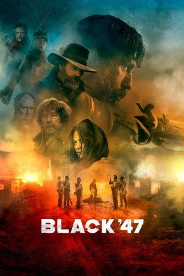
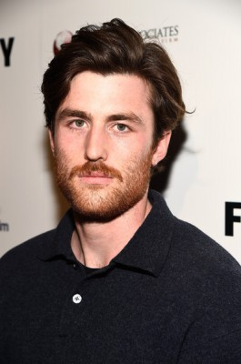
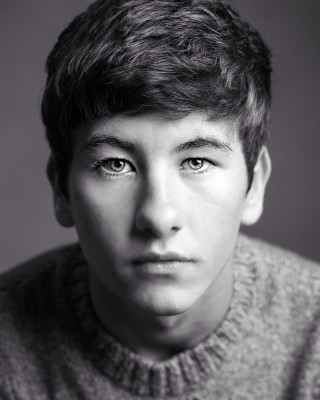
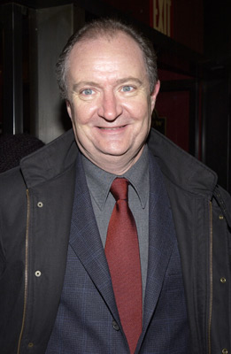
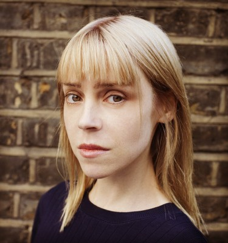
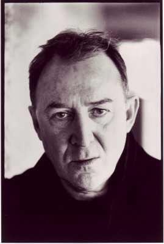
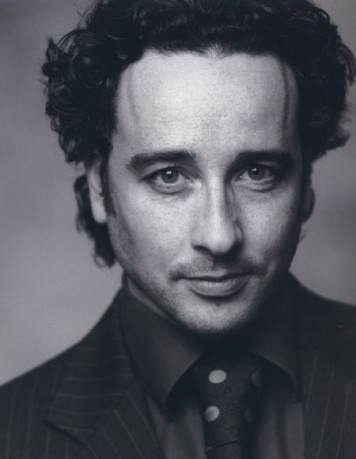
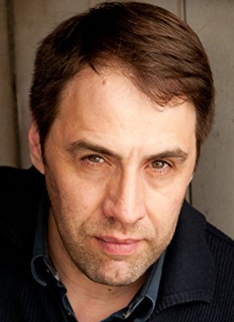

#10159 Black 47
 
 IMDB-Wertung: 6.9 / 10
IMDB-Wertung: 6.9 / 10  Metascore: 65
Metascore: 65 
Als Martin Feeney 1847 nach Hause kommt, ist von seiner irischen Heimat nichts mehr übrig. Jahrelang hat er für die Briten in Afghanistan gekämpft, jetzt sehen die Vertreter der Krone in seinem Land ungerührt zu, wie die Menschen verhungern. Die Kartoffelfäule zerstört ihre Lebensgrundlage. Wer seine Pacht nicht mehr zahlen kann, wird gnadenlos vertrieben, sein Haus unbewohnbar gemacht. Feeney hat nichts mehr, alle sind tot. Der Ex-Soldat packt sein Gewehr und beginnt, sich durch die britische Besatzungshierarchie zu metzeln. Es ist Zahltag …
Jahr: 2018
Dauer: 99 Minuten
FSK: 16
Land: Irland Studio: Ascot Elite Entertainment GroupTonspuren: DTS - ,
Untertitel: Deutsch, Englisch,
Auflösung: 1080p (1920x808) Größe: 4986 MB
Genre: Action, Drama
Regisseur: Lance Daly
Drehbuch: Lance Daly, P.J. Dillon, P.J. Dillon, Eugene O'Brien, Pierce Ryan
Soundtrack: Brian Byrne
Darsteller:
 Hugo Weaving als Hannah
Hugo Weaving als Hannah-  James Frecheville als Feeney
- Stephen Rea als Conneely
- Freddie Fox als Pope
-  Barry Keoghan als Hobson
- Moe Dunford als Fitzgibbon
- Sarah Greene als Ellie
-  Jim Broadbent als Lord Kilmichael
- Ciaran Grace als O'Sé
-  Antonia Campbell-Hughes als Brigid Ni Dhomhnaill
-  Dermot Crowley als Judge Bolton
- Diarmuid de Faoite als Catholic Priest
- Ruairí Heading als Coyne
- Brandon Maher als Michael (Mícheál)
- Geraldine McAlinden als Mrs. Houston
- Ryan McAllister als Bailiff
-  Aidan McArdle als Cronin
-  Julian Nest als Durkan
- Ally Ni Chiarain als Scalpeen Woman
- Laurence O'Fuarain als I.C Sub Constable
- Michel Tereba als Firing Squad Sergeant
- Colm Seoighe als Swineherd
- Olivier Biwer als Prison Officer
- Kieran Boland als Sullivan
- Elliot Gray als British Soldier
- Aymeric Harter als Soldier
- Orla Hogan als Peasant
- Fiach Kunz als Lieutenant D'Arcy
- Joe Lydon als Rourke
- Keith McErlean als John Murray Knox
- Liam McEvoy als Prison Officer Turnkey
- Sheila Moylette als Registrar
- Ronan O'Connor als Red
- Michael Reed als Peasant
- Dan Shanley als I.C. Constable
- Ian Tilson als Firing Squad
Datei: X:\2018(A-F)\Black 47 (2018, FSK16, 1920x808).mkv seit 13.12.2018
Festplatte: HD 2017(A-Z)-2018(A-F)
 Es gibt insgesamt 151 Filme in der Gruppe '2018(A-F)'
Es gibt insgesamt 151 Filme in der Gruppe '2018(A-F)'